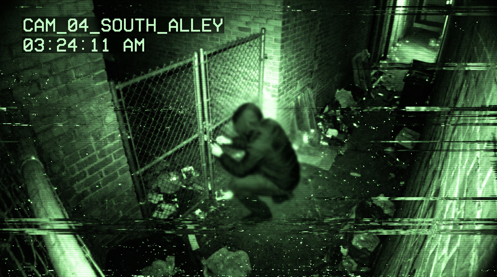
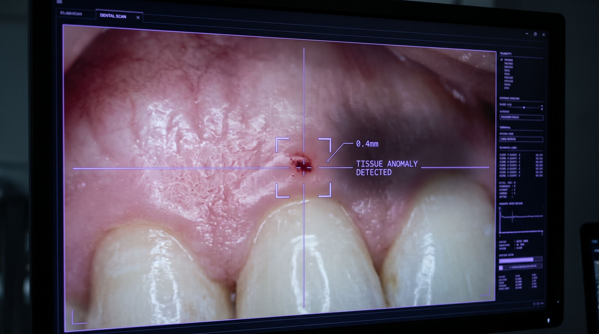
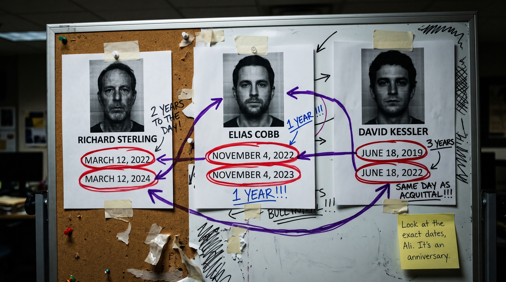

Locked files unlock in sequence. Open the file, scroll to the end, then press [ CLOSE FILE ].
FILE 00 // ADMINISTRATIVE
PERSONNEL CLEARANCE & ROSTER
ACCESS LEVEL: ADMINISTRATIVE
DEPARTMENT: COLD CASE INITIATIVE
[DOCUMENT 01: INITIATIVE ID BADGE & BIO - NOURAN F.]
TITLE: Forensic & Medical Specialist
BACKGROUND: Recruited directly from her medical residency following her independent consultation on the "Untouchable" anomaly two years ago.
SPECIALTY: Forensic odontology, post-mortem pathology, and physical evidence reconstruction.
EVALUATION NOTES: Highly independent. Possesses an exceptional eye for physical anomalies that traditional coroners miss. Empathic to victims, but possesses a low tolerance for bureaucratic incompetence.
[DOCUMENT 02: INITIATIVE ID BADGE & BIO - ALI M.]
TITLE: Data & Pattern Analyst
BACKGROUND: Recruited alongside Nouran F. Background check: Flawless. No prior criminal records, no financial anomalies.
SPECIALTY: Digital architecture, telemetry extraction, and predictive behavioral modeling.
EVALUATION NOTES: Strategic and highly analytical. Tends to overthink risk variables. Rarely leaves his terminal during active field operations, preferring to control the environment digitally.
[DOCUMENT 03: SUPERVISOR'S INTERNAL MEMO]
TO: Department Chief
FROM: Unit Director
SUBJECT: Partnership Dynamic (Ali & Nouran)
Per your request, I've reviewed the decision to keep Ali and Nouran permanently partnered. Yes, they operate almost entirely outside standard protocol. Yes, their desks are a mess of old takeout containers and unauthorized server wires. And yes, their constant sarcastic banter in the bullpen is exhausting to listen to.
However, I strongly advise against separating them.
They were brought in together after they broke that first case as volunteers, and their dynamic is the only reason they close files at this rate. Ali sees the digital grid; Nouran sees the physical reality. They trust each other implicitly. Let them work.
— END OF FILE —
CASE 01
THE STAIRWELL ANOMALY
STATUS: CLOSED
LEAD INVESTIGATORS: ALI M. & NOURAN F.
[DOCUMENT 01: DIGITIZED INCIDENT REPORT]
Incident Date: October 14, 2021
Location: North Campus, Level 4 Concrete Parking Stairwell
Victim: Liam Vance (Age 20)
Summary of Scene: Victim discovered at the base of the stairwell by campus security at 06:15. Severe blunt force trauma to the cranium, multiple rib contusions. Blood alcohol content at 0.14. No witnesses. Heavy rainfall during the night compromised trace evidence.
OFFICIAL RULING: ACCIDENTAL FALL. CASE CLOSED.
NOURAN'S NOTE: The ME was lazy. They saw a drunk kid and stopped looking. Look at the ulna. Look at the defensive posture. This wasn't a slip.
Nouran: I just pulled the Vance file from the 2021 backlog. The original detective was an absolute idiot.
Ali: It's 1 AM, Nouran. And it's efficient paperwork. You can't blame a bureaucrat for loving efficiency.
Nouran: I can when it lets a killer walk. He stamped this "accident" before the body was even cold. The system is broken, Ali.
Ali: The system isn't broken. It's just blind. Sometimes someone just has to force its eyes open.
Nouran: Come over to my desk. Look at this watch.
[NARRATIVE LOG: ALI]
The Cold Case Initiative office at 1:00 AM always felt like a submarine. Outside, the Cairo rain was beating relentlessly against the reinforced glass, but inside, the only sound was the low, steady hum of the server racks and the clicking of Nouran's mouse.
I pushed my chair back, grabbed my lukewarm coffee, and walked over to her desk.
Nouran's monitors were always a chaotic mess of bone scans, autopsy reports, and high-res crime scene photos. It was a digital graveyard, and she navigated it better than anyone I had ever met. Right now, she had the police photos pulled up from the bottom of the stairwell. The victim, Liam Vance, was sprawled awkwardly on the wet concrete.
She didn't point to the blood. She didn't point to the angle of the stairs. She tapped her pen against a zoomed-in medical scan of the victim's right forearm.
"Parry fracture," she said, not even looking up at me. "Right across the distal third of the ulna."
I leaned in, resting a hand on the back of her chair. "Explain it to the data guy."
"You only get a hairline crack on that specific part of the bone if you raise your arm over your face to block a heavy, downward strike," she explained, tracing the faint white fracture line on the screen. "If you fall down the stairs, you break your wrists trying to catch yourself. Liam didn't fall. Someone hit him with something heavy, like a tire iron or a pipe, and then he went over the edge."
She swiped the screen, bringing up a macro-photograph of the victim's wrist.
[EVIDENCE FILE: ITEM #04 - WRISTWATCH]
ITEM #04 — WRISTWATCH
AUTOPSY EXCERPT (PAGE 12): "Rigor mortis progression and post-mortem lividity indicate time of death occurred between 11:15 PM and 11:45 PM."
Nouran's Audio Note: "The original detective noted the watch broke during the fall, stopping at 1:15 AM, giving the prime suspect a perfect alibi. But look at the lividity report. The victim's heart stopped beating two hours before that watch broke. The killer smashed it on the concrete after the fact to create a fake timeline. They thought they were being smart."
[NARRATIVE LOG: ALI]
The killer thought they were being smart, but they were dealing with Nouran.
The prime suspect five years ago was Julian Cross, a former classmate whose family owned half the commercial real estate downtown. Julian had the kind of wealth that acted as a physical shield against consequences. He had an airtight alibi: his phone's GPS history and a highly compensated VIP club bouncer placed him at a lounge across town at exactly 11:30 PM. The police took the alibi, bowed to his family's lawyers, and closed the file.
But people with money always forget that their phones aren't the only things talking to the nearest cell tower.
I walked back to my terminal. The green glow of my own monitors washed over the desk. I didn't need a warrant to look at Julian's life; I just needed a backdoor. Julian drove a 2021 Aston Martin—a rolling computer. I cracked my knuckles, opened a secure terminal window, and wrote a script to bypass the manufacturer's firewall.
I knew exactly what I was looking for. It took me twelve minutes to breach the server, isolate his specific VIN, and pull the raw telemetry data from that night in October.
When the table populated on my screen, I couldn't help but smile.
[DATA EXPORT: VEHICLE TELEMETRY - J. CROSS]
Timestamp
Vehicle Status
Location Ping
Distance from Crime Scene
23:05:12
Engine ON
VIP Lounge Valet
4.2 miles
23:22:45
Engine OFF
4th St. Parking Structure
0.1 miles
23:25:01
Bluetooth Disconnect
4th St. Parking Structure
0.1 miles
23:48:30
Engine ON
4th St. Parking Structure
0.1 miles
[NARRATIVE LOG: ALI]
He had left his phone at the club to build the alibi, driven to the stairwell, ambushed Liam, pushed him over the edge, smashed the watch to manipulate the timeline, and driven back. The raw data proved he was there.
But data is circumstantial in a courtroom. A decent defense attorney would just claim Julian lent his car to an unnamed friend. We didn't need data. We needed him to hang himself with it.
We brought him in the next morning at 9:00 AM under the guise of a "routine file update."
Julian sat in Interrogation Room 2 looking exactly like a guy who had never been told 'no' in his life. He wore a tailored suit that cost more than my car, checking his pristine, unbroken watch every thirty seconds. He didn't know we were about to drop the floor out from under him.
[AUDIO TRANSCRIPT: INTERROGATION ROOM 2]
Julian Cross: I don't know why I'm here. My family's lawyers have already told the city we aren't answering any more questions about Liam. It was a tragedy. He slipped. We moved on.
Nouran: Look at the photo, Julian.
Julian Cross: I don't want to look at a body. I have rights.
Nouran: It's a bone scan.
Julian Cross: [Silence]
Nouran: We found a micro-transfer of skin cells trapped deep inside the hairline fracture on Liam's arm. You hit him hard, Julian. Hard enough to embed your own DNA into his bone. Five years ago, the equipment to isolate a sample that small didn't exist. Today, it does.
Ali: The lab requisition is processing through the national database now. The new system takes about twenty minutes to return a DNA match. We're at minute eighteen.
Julian Cross: That's... that's a bluff. I wasn't there. You know my phone was at the club.
Nouran: The DNA doesn't care where your phone was, Julian.
Julian Cross: Listen. Listen to me. Both of you. You work for a severely underfunded city initiative. I know what you make in a year. Whatever the city is paying you, I can triple it right now. Cash. Today. I'll make a phone call and it'll be in your accounts before you finish your shift. You just have to lose the swab. Claim it was corrupted.
Ali: Did you get that on the mic, Nouran?
Nouran: Loud and clear.
Julian Cross: Wait—no—
[CASE STATUS UPDATE]
UPDATE: Suspect Julian Cross detained. Charged with Murder in the Second Degree, Obstruction of Justice, and Attempted Bribery of a City Official.
Summary of Scene: Victim discovered by sanitation workers. Severe contusions on the torso and face. Cause of death ruled as internal bleeding from blunt force trauma. Location is known territory for the 'Iron Syndicate' smuggling ring. No witnesses. No physical evidence recovered.
OFFICIAL RULING: GANG ALTERCATION. UNSOLVED. CASE INACTIVE.
NOURAN'S NOTE: Look at the spacing of the rib fractures on the medical examiner's report. They didn't just beat him; they took their time. It was an interrogation. He hid something inside that warehouse before they caught him in the alley.
Nouran: The police never actually searched the Kingsley warehouse. They just assumed it was a random gang hit outside. If Marcus hid a ledger or a drive in there, it's been sitting there for four years.
Ali: It's also an active Syndicate front, Nouran. They run illegal shipments through there every night. They have armed guards.
Nouran: I can get in through the old ventilation grate on the south alley. I checked the municipal blueprints.
Ali: Absolutely not. Do not go down there.
Nouran: Physical evidence decays, Ali. If they renovate that building, whatever he hid is gone forever.
Ali: Give me a few hours. I will find a digital entry point. Just stay put. Promise me you're going home.
Nouran: Fine. I'm going home.
[NARRATIVE LOG: ALI]
I knew she was lying the second she typed the word 'fine.' Nouran doesn't do 'fine.' But as I sat alone in my apartment at 3:15 AM, staring at three monitors glowing in the dark, I desperately hoped she had actually listened to me for once.
My coffee had gone cold hours ago, replaced by the adrenaline of committing a federal cyber-felony. I had made a decision: if she thought there was evidence in that building, she would eventually try to find it. The only way to stop her from walking blindly into a warehouse guarded by armed smugglers tomorrow was to steal the evidence digitally tonight. I wanted to have it waiting on her desk in the morning so she wouldn't have a reason to go.
The Syndicate wasn't stupid. They didn't connect their security cameras to the city grid. They used a closed-loop, encrypted wireless network. But every network has a handshake, and every handshake can be intercepted if you're willing to break enough laws to do it. I just needed to map their patrols, find the blind spots, and prove the ledger existed.
At 3:22 AM, my script finally brute-forced the encryption key.
The screen blinked, and the closed-circuit feeds from the Kingsley Warehouse flooded my monitors. Twelve different camera angles in gritty, green-tinted night vision. I leaned forward, expecting to see empty loading docks and bored guards pacing in the dark.
Instead, I looked at Camera 4.
My stomach completely dropped out. My blood turned to ice water.
[EVIDENCE SCAN: INTERCEPTED CCTV FEED]
NETWORK TIMESTAMP: 03:24:11 AM
SYSTEM WARNING: MOTION DETECTED - SECTOR 4

CAMERA 4 — 03:24:11
[NARRATIVE LOG: ALI]
It was Nouran.
She was wearing a dark jacket, crouched by the south alley fence, picking the padlock. She hadn't gone home. While I was sitting in my safe apartment trying to solve the problem digitally, she was already standing in the cold, risking her life in physical reality.
Panic hit me like a physical blow. I was going to kill her. If the Syndicate didn't do it first.
My eyes darted to Camera 1. A black SUV was pulling up to the front loading dock. Four men stepped out, two of them carrying slung rifles. They were starting their perimeter sweep. If Nouran made it through the fence, she was going to walk directly into their patrol route in less than sixty seconds.
I grabbed my cell phone with shaking hands and dialed her number.
[AUDIO TRANSCRIPT: MOBILE RECORDING]
Nouran: Ali, I told you I went home.
Ali: Drop the lockpick. Move exactly three feet to your left and press your back flat against the brick wall. Now.
Nouran: ...What?
Ali: Do it, Nouran!
Nouran: How do you—
Ali: I'm looking at you on Camera 4. I cracked their network. There are two armed men walking around the corner of the alley right now. Hold your breath.
Nouran: Okay. Okay, you see everything?
Ali: I see everything. You are out of your mind, Nouran. Turn around and go back to your car.
Nouran: Not without the evidence. The vent is right above me. Guide me to the manager's office on the second floor.
Ali: Nouran, please—
Nouran: You're my Oracle, Ali. Tell me when to move.
[NARRATIVE LOG: ALI]
My hands were shaking over the keyboard, but my voice was dead calm. It had to be. For the next twelve minutes, I played a terrifying game of chess with her life.
Ali: Wait. Guard by the forklift is turning around. Okay, go. Move behind the shipping crates.
I watched her through the grainy lenses as she slipped through the shadows of the warehouse. She was entirely fearless. It was the thing I admired most about her, and the thing that terrified me the most. She reached the manager's office, prying up a loose floorboard exactly where the victim's old blueprints suggested it would be.
"I have it," she whispered over the phone. "It's a ledger. USB drive taped to the back."
Ali: Put it in your pocket. Team of three coming up the main stairs. You have forty seconds to get back to the vent.
When she finally dropped out of the grate and disappeared into the safety of the blind alley, I collapsed back into my chair. My shirt was completely soaked in sweat. I closed the connection to the cameras and buried my face in my hands.
She was brilliant. But she was a liability to herself. If I wasn't watching over her, she was going to get herself killed. I made a promise to myself in the dark of my apartment that night: I would always control the narrative. I would hide things from her, alter the data, and manipulate the board if that's what it took to keep her safe. She might hate me for it if she ever found out, but at least she would be alive.
[CASE STATUS UPDATE]
UPDATE: Encrypted USB drive recovered from Kingsley Warehouse submitted to major crimes. Warrants issued for Iron Syndicate leadership.
STATUS: CLOSED.
— END OF FILE —
CASE 03
THE STERLING COLLAPSE
STATUS: ACTIVE / REOPENED
LEAD INVESTIGATORS: ALI M. & NOURAN F.
[DOCUMENT 01: DIGITIZED MEDICAL EXAMINER'S REPORT]
Incident Date: March 12, 2024
Location: Executive Office, Sterling Logistics HQ
Victim: Richard Sterling (Age 52)
Summary of Scene: Victim found unresponsive at his desk by his executive assistant. No signs of struggle. No forced entry. Security cameras show no one entering or leaving the office suite during the time of death.
Autopsy Findings: Severe coronary artery occlusion leading to massive myocardial infarction (heart attack). Standard toxicology screen: Negative for narcotics.
OFFICIAL RULING: NATURAL CAUSES. CASE CLOSED.
NOURAN'S NOTE: Heart attacks don't leave puncture wounds on the maxillary gumline.
[NARRATIVE LOG: ALI]
It was a quiet Tuesday afternoon. The kind of slow, bureaucratic day where the hum of the AC unit is the loudest thing in the room. We had just closed out a string of minor burglary cold cases, and Nouran was bored. Whenever Nouran got bored, she went digging into the digital archives, pulling random closed files just to grade the original coroner's work.
I was typing a routine budget request when I saw the reflection of her monitor on the glass partition between our desks.
The name on the file was Richard Sterling.
I didn't move. I didn't stop typing. But beneath my ribs, my heart suddenly hammered a violent, irregular rhythm against my sternum.
Richard Sterling wasn't just a logistics CEO. Three years ago, one of his shell company's shipping trucks was found abandoned on the side of the highway. The refrigeration unit had been intentionally disabled. Thirty-two smuggled migrants suffocated inside. Sterling used his immense wealth to build an impenetrable legal firewall, throwing a low-level driver under the bus. The driver got life in prison. Sterling walked out of the courthouse a completely free man.
Two years later, he dropped dead of a heart attack in his locked, heavily guarded office. Case closed. Natural causes.
I had watched the original medical examiner's presentation on this case myself. I knew the file backward and forward. The ME hadn't even bothered to open the victim's mouth.
"Ali," Nouran said, shattering the quiet. "Come look at this."
I forced my hands to leave the keyboard. I took a breath, stood up, and walked over to her desk, keeping my face entirely blank. "What did you find?"
[AUDIO TRANSCRIPT: BULLPEN DESK 4]
Nouran: Richard Sterling. Do you remember him?
Ali: The logistics guy. The trafficking case. The system completely failed on that one.
Nouran: The system failed him twice. The first time when they let him walk, and the second time when they let his killer walk.
Ali: His file says natural causes. Heart attack. He was fifty-two, overweight, and worked eighty-hour weeks.
Nouran: That's what the ME saw. But look at the post-mortem dental scans. They took these routinely to identify the body for the estate lawyers, but they didn't actually look at them.
Ali: I'm looking. It's just a mouth, Nouran.
Nouran: Zoom in on the upper right quadrant. Maxillary gumline. Right above the second molar.
[EVIDENCE SCAN: POST-MORTEM DENTAL IMAGING]

POST-MORTEM DENTAL SCAN
FORENSIC DENTISTRY ANALYSIS (NOURAN F.): "Localized micro-hematoma. Circular contusion measuring 0.4mm in diameter. Depth and tissue displacement are entirely consistent with a 31-gauge hypodermic needle."
[AUDIO TRANSCRIPT: CONTINUED]
Nouran: Someone injected him right into the gum.
Ali: A trip to the dentist?
Nouran: His dental records show he hadn't had work done in eight months. You don't get a fresh micro-bruise like that naturally. And you certainly don't get it from a heart attack.
Ali: If someone injected him... what causes a massive coronary but doesn't show up on a standard tox screen?
Nouran: Potassium chloride. Highly concentrated. If you push it directly into the bloodstream, it stops the heart instantly. It mimics a myocardial infarction perfectly, and the excess potassium naturally dissipates into the surrounding tissues within a few hours. By the time he was on the autopsy table, his blood levels would have looked completely normal.
Ali: That's... that's terrifyingly clinical. There are no cameras showing anyone entering his office. No forced entry.
Nouran: Exactly. Whoever did this is a ghost. And they are brilliant.
[NARRATIVE LOG: ALI]
I stared at the screen for a full minute before I could speak again. The office felt freezing cold.
She had found it.
"We need to pull his associate files," I told her, forcing my voice to stay completely level. "If this was a professional hit, maybe one of his old cartel partners tied up a loose end."
"Maybe," Nouran said softly, her eyes still locked on the pinpoint bruise. "Or maybe someone out there is taking out the trash."
I realized in that exact moment that I could never, ever underestimate her. I thought we were just looking at a standard cold case, but she had just pulled the thread on something massive. Something incredibly dangerous. I knew right then that once Nouran locked onto a target, she was never going to let it go.
I sat back down at my terminal. I had to write a script to query known potassium chloride thefts in the tri-state area. I had to sit right next to the smartest detective on earth, and help her hunt a ghost that was already breathing right down our necks.
[CASE STATUS UPDATE]
UPDATE: Cause of death officially contested by Cold Case Initiative. Upgraded to Suspected Homicide.
STATUS: ACTIVE INVESTIGATION.
— END OF FILE —
CASE 04
THE PATTERN
STATUS: ACTIVE / CRITICAL
LEAD INVESTIGATORS: ALI M. & NOURAN F.
[DOCUMENT 01: INITIATIVE DIGITAL WHITEBOARD EXPORT]
QUERY PARAMETERS: Unsolved / "Accidental" Deaths + High-Profile Acquittals (Last 5 Years)
MATCHES FOUND: 3
TARGET 01: Richard Sterling (Logistics CEO)
Accusation: Human Trafficking (32 Counts Manslaughter)
Legal Result: Charges Dropped — March 12, 2022
Date of Death: Massive Myocardial Infarction — March 12, 2024
TARGET 02: Honorable Elias Cobb (Circuit Court Judge)
Accusation: Aggravated Bribery & Witness Tampering
Legal Result: Cleared by Internal Affairs — November 4, 2022
Date of Death: Sudden Seizure / Vehicular Crash — November 4, 2023
TARGET 03: David Kessler (Serial Domestic Abuser)
Accusation: Felony Assault
Legal Result: Mistrial / Victim Refused to Testify — June 18, 2019
Date of Death: Severe Allergic Reaction (Coma) — June 18, 2022

PATTERN BOARD — ANNIVERSARIES
NOURAN'S NOTE: Look at the exact dates, Ali. It's an anniversary.
[AUDIO TRANSCRIPT: BULLPEN DESK 4 - 08:30 AM]
Nouran: He's not just a hired gun. Hired guns don't care what day it is.
Ali: You pulled Cobb and Kessler? Those files were buried in the county archives.
Nouran: Once I saw the potassium chloride on Sterling, I knew the killer had a medical background. I ran a cross-matrix algorithm on every suspicious "natural" death involving a high-profile acquittal in the state. Look at the board, Ali.
Ali: [Silence]
Nouran: Sterling died exactly two years to the day after his charges were dropped. Judge Cobb drove into a bridge abutment exactly one year to the day after he was cleared. And David Kessler went into anaphylactic shock exactly three years to the day after his final victim dropped the restraining order.
Ali: It's an anniversary.
Nouran: It's a ledger. He's balancing the books. He wants the universe—or maybe just the victims themselves—to know exactly why they are dying.
[NARRATIVE LOG: ALI]
Nouran highlighted the dates on the main display. Three red circles glowing on the glass.
I didn't breathe for a second.
We weren't just looking at an assassin anymore. We were looking at someone who thought they were poetic. Someone who thought they were entirely above the system. I stared at the red ink on the dates, realizing exactly how arrogant this guy really was.
He had spent years making sure his methods were untraceable. He had mastered chemical half-lives and blind spots in the cameras. But in all that perfection, he had given himself one fatal indulgence. One point of pride. He wanted them to look at the calendar and know their time was up.
And Nouran had just caught him slipping.
"You're right," I said, finally tearing my eyes away from the screen to look at her. "He's not just a killer. He's a zealot. And zealots are predictable."
"If he operates on the anniversaries of acquittals," Nouran said, her eyes flashing with that intense, obsessive focus I knew so well, "then we can predict his next target. We can scan the court database right now for anyone terrible who walked free exactly one year ago today. If this guy is real, he's going to hit them next."
I looked back at the glowing dates. I knew right then we were dealing with someone who wouldn't stop until he was forced to. The trap was already set. And now, I had to sit there and help her bait it.
Ali: The algorithm is compiling now. It's scrubbing five counties for major acquittals with anniversaries approaching in the next 72 hours.
Nouran: Filter for violent offenses and financial ruin. This killer only goes after the monsters.
Ali: Filtering.
Ali: ...We have a match.
Nouran: Who is it?
Ali: Victor Vance. Mob accountant. Walked free on a technicality exactly one year ago this Friday.
Nouran: That's it. That's the one. He's going to hit him on Friday. We have three days to set up surveillance.
— END OF FILE —
CASE 05
THE DIGITAL SHADOW
STATUS: ACTIVE / CRITICAL
LEAD INVESTIGATORS: ALI M. & NOURAN F.
[DOCUMENT 01: SURVEILLANCE LOG - FRIDAY 23:45 PM]
TARGET: Victor Vance (Mob Accountant)
LOCATION: 4th Avenue Penthouse
EVENT TIMELINE:
23:15: Target enters penthouse. Security detail locks perimeter.
23:42: Target's biometric vitals spike, then flatline.
23:45: Initiative team (Ali M. & Nouran F.) breaches room. Target deceased.
CAUSE OF DEATH: Suspected neurotoxin, disguised as a massive localized stroke.
NOURAN'S NOTE: We were sitting right across the street. The guards were at the door. No one went in. But I checked the building's server. The camera feeds looped for exactly 14 seconds.
[AUDIO TRANSCRIPT: BULLPEN DESK 4 - 02:15 AM]
Nouran: He didn't bypass the physical security. He bypassed the digital. He sent a localized blackout command to the penthouse router. That gave him a 14-second window to get in, administer the toxin, and get out.
Ali: You can't spoof a blackout command from a random coffee shop without lagging the video feed. That takes a direct proxy. He had to be routing through a high-speed server.
Nouran: Exactly. So I pulled the building's handshake logs. I'm running a trace on the proxy IP right now. We are going to find out exactly where this guy is sitting.
[DOCUMENT 02: NETWORK TRACEROUTE EXPORT]
INITIATING REVERSE IP TRACE...
Bouncing... Node 1 (Encrypted)... Node 2 (Clear)...
TARGET IP RESOLVED: 192.168.4.112
CROSS-REFERENCING LOCATION...
MATCH FOUND: INTERNAL SUBNET - COLD CASE INITIATIVE
PHYSICAL LOCATION: BASEMENT SERVER ROOM - RACK 4
SYSTEM ALERT: CRITICAL THREAT DETECTED INSIDE PERIMETER
[NARRATIVE LOG: ALI]
When the IP resolved to our own subnet, the air in the bullpen went completely dead.
We were hunting a ghost, and the ghost was sitting in our own house.
If this killer had root access to our servers, he could see everything. He could see our case files. He could see every keystroke Nouran was making right now. He was watching us track him.
"Step away from the terminal," I told her, my voice sharp and entirely void of panic.
"Ali, the proxy is in our basement—"
"Lock the door and do not touch the network," I ordered, already out of my chair and sprinting toward the bullpen exit. "I have to pull the physical drives before he scrubs the internal logs or locks us out."
[AUDIO TRANSCRIPT: INITIATIVE SERVER ROOM]
Ali: Where is it... Rack 4...
Ali: Come on. Isolate the drive. Give me the drive.
Automated Voice: THERMAL OVERLOAD DETECTED. HALON SYSTEM ARMED.
Ali: No. No, no, no—
Automated Voice: INITIATING EMERGENCY DATA PURGE.
[NARRATIVE LOG: ALI]
I coughed through the acrid smoke, stumbling backward into the hallway just as the heavy, steel fire doors slammed shut and magnetically locked.
The failsafe had triggered. I stood there, wiping my stinging eyes, watching through the reinforced glass as the thick white halon gas flooded the room, suffocating the servers.
He had rigged a dead man's switch.
The second I tried to isolate his proxy drive, his malware initiated a thermal surge that cooked the entire rack. He burned down our sanctuary just to cover his tracks. Months of cold case archives, algorithms, and digital evidence, completely vaporized in ten seconds.
Nouran ran down the stairwell a minute later, stopping dead when she saw the white gas pressed against the glass. She looked at me, her face pale.
"He's gone," I said quietly, leaning my head against the concrete wall.
He was desperate. But as I stood there watching the sparks die out in the dark, I knew one thing for certain: digital files can burn, but hardware doesn't evaporate.
[SYSTEM NOTIFICATION]
CRITICAL ERROR: ARCHIVE CONNECTION LOST.
84% OF DIGITAL INITIATIVE FILES CORRUPTED OR DESTROYED.
— END OF FILE —
CASE 06
THE GHOST IN THE MACHINE
STATUS: ACTIVE / CRITICAL
LEAD INVESTIGATORS: ALI M. & NOURAN F.
[DOCUMENT 01: INITIATIVE INCIDENT REPORT]
Incident: Catastrophic Server Room Failure (Halon Gas & Surge Failsafe Triggered)
Data Loss: 84% of Cold Case Digital Archives Corrupted.
Site Status: HAZARDOUS. Airborne particulates and residual halon. Clearance restricted to Level 4 Hazmat personnel.
NOURAN'S NOTE: The drives melted, but the killer needed a physical bridge to our network. Hardware doesn't vaporize.
[SECURE CHAT LOG: MOBILE BACKUP NETWORK - 04:12 AM]
ENCRYPTED CHANNEL // AWAITING KEY
Nouran: The fire inspector just opened the heavy doors to vent the smoke. I'm going in.
Ali: Nouran, don't. The air quality is still toxic. The racks might still be electrically live. Wait for the hazmat team to clear it in the morning.
Nouran: The data is gone, Ali. He beat us digitally. But I am not letting him walk away from this building. I'm wearing a respirator mask.
Ali: It's too dangerous. I am coming down there. Do not touch anything until I get there.
Nouran: Too late. I'm looking at Rack 4.
[NARRATIVE LOG: ALI]
I sprinted down the concrete stairwell, my lungs burning. I had told her it was too dangerous because I meant it. The thermal surge had melted the primary cooling lines; the room was a chaotic hazard of exposed wiring and chemical smoke.
But Nouran never listens to the word 'wait'.
When I burst through the heavy steel doors, she was standing in the ash, a respirator strapped over her face. She was shining a tactical flashlight straight into the gutted remains of Rack 4.
The digital failsafe had wiped the drives perfectly, just as it was designed to do. But as I walked up beside her, the beam of her flashlight settled on a charred, melted piece of plastic bolted to a routing switch.
My stomach dropped out completely.
This killer had been brilliant. He had thought of the halon, he had thought of the drive wipe, but he was still tied to the physical world. Hardware has serial numbers. Hardware leaves a paper trail. I realized with a sickening wave of adrenaline that he had left a physical anchor right inside our building, and Nouran had just pulled it up by the chain.
"Get a macro lens on that," I told her, my voice echoing hollowly in the cavernous, smoking room. We were about to find out exactly who this guy was.
[EVIDENCE SCAN: ASSET TAG EXPORT]
TRACE RESULTS:
Serial #883-XC-9002 was NOT purchased by the Cold Case Initiative.
Date of Purchase: October 2, 2021 (Twelve days before Case 01)
Buyer: A shell LLC registered to a private PO Box downtown.
Signatory Name: JOSH ADAMS
[AUDIO TRANSCRIPT: SERVER ROOM]
Nouran: We have a name. Josh Adams.
Ali: It could be a phantom identity. A stolen name to buy the hardware.
Nouran: The PO Box was paid in cash, yearly. But I just ran the LLC through the municipal tax database. It has a physical commercial lease attached to it. A basement office off 7th Avenue.
Ali: [Silence]
Nouran: He's there, Ali. He just burned our servers. He's going to go to ground.
Ali: You're not going to that address. Not alone, and not right now.
Nouran: If we wait for a warrant, he's going to vanish into the wind!
Ali: If this guy is willing to burn down a government server room, what do you think he's going to do to a basement door? It's a trap, Nouran. It is physically rigged. We need to call a tactical unit and wait for daylight.
Nouran: I'm not losing him! I am going to that basement, Ali. With or without you.
Ali: Fine. You are not walking into that trap alone.
[CASE STATUS UPDATE]
UPDATE: Prime Suspect Identified: JOSH ADAMS.
STATUS: CRITICAL / FIELD PURSUIT AUTHORIZED.
— END OF FILE —
FILE 07 // RESTRICTED ACCESS
RESTRICTED ACCESS
WARNING: THIS FILE CONTAINS UNREDACTED FIELD DATA.
STATUS: SUSPECT AT LARGE.
[AUDIO TRANSCRIPT: TACTICAL BREACH]
Ali: The door is steel-reinforced. Nouran, step back. If he's in there, he's not going to just surrender.
Nouran: He's not getting away this time. On three. One. Two.
Nouran: Clear left!
Ali: Clear right. The room is empty. CPU is gone.
Nouran: Ali... look at the wall.
[NARRATIVE LOG: ALI]
When the beam of Nouran's flashlight hit the center of the room, my stomach completely dropped out.
I watched her eyes lock onto the wall. There was no map of his crimes on that corkboard. No string connecting the monsters he had killed. Instead, the wall was covered in something else entirely. It was a shrine.
The entire corkboard was covered in photographs. But they weren't targets. They were all of Nouran. Hundreds of them. Nouran sitting at her desk at the Initiative. Nouran buying coffee two years ago. Nouran standing in the rain at the stairwell during Case 01. The angles were distant, hidden, meticulous.
He had been watching her. He had been watching her since before we were even partners.
Pinned to the very center of the board, surrounded by a halo of surveillance photos, was a single, handwritten note on Initiative stationary.
[EVIDENCE SCAN: THE CENTER NOTE]
TRANSCRIPT OF RECOVERED NOTE:
"You are the only one who sees the physical truth, Nouran. The only one brilliant enough to grade my work. Keep looking. I'll always be watching."
[AUDIO TRANSCRIPT: BASEMENT OFFICE]
Nouran: He took these... he was standing right outside my apartment in this one.
Ali: This sick, arrogant son of a bitch!
Nouran: He's not just a vigilante. He's obsessed. He burned down the server room because I got too close, and now... now he wants me to know he's looking right back at me.
Ali: I am putting a protective detail on your apartment tonight. You are not walking to your car alone ever again.
Nouran: Ali, I'm not going to hide from him.
Ali: I'm not asking you to hide! I'm telling you that I am never letting him get this close to you again. I swear to you, Nouran. I will protect you from him.
[NARRATIVE LOG: ALI]
She looked at me, her eyes wide, processing the sheer scale of the violation.
The ghost she was hunting wasn't just a killer anymore; he was a phantom living in the periphery of her entire life. I looked at the board, at the hundreds of photos of my best friend, and I felt a profound, heavy silence settle over me.
I realized exactly how much this mastermind controlled her in that moment. He had isolated her. He had made her terrified of the shadows, ensuring that the only person she would ever truly trust to keep her safe... was me.
You've read the archive now.
You've seen the monsters the system created, and you've seen what it took to finally close their ledgers. Nouran is a brilliant detective. The best I've ever known. She found the parry fracture. She found the gumline injection. She traced the digital shadow all the way to that basement door.
We still sit across from each other every day at the Initiative. She still pulls the cold cases. She still looks for the phantom who stalked her. The ghost who violated her privacy just to prove a point.
She thinks Josh Adams is a monster out there in the city, always one step ahead, watching her from the dark. She locks her doors twice now. She checks her rearview mirror. And every single day, she thanks me for being the only person who makes her feel safe.
She needed a ghost to chase. And I needed her to stop looking at me.
I know you probably have a lot of questions right now. You've read through all these files, and you want to know how I pulled it off, or why I'm even letting you see this.
But before you go back to the beginning to look for the things you missed...